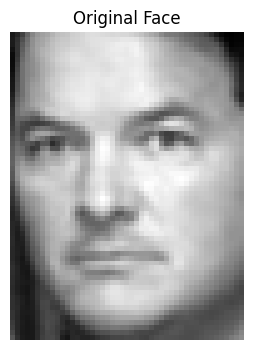
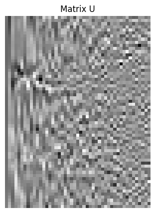
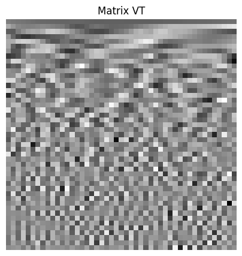
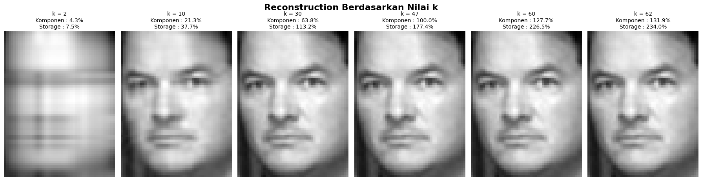
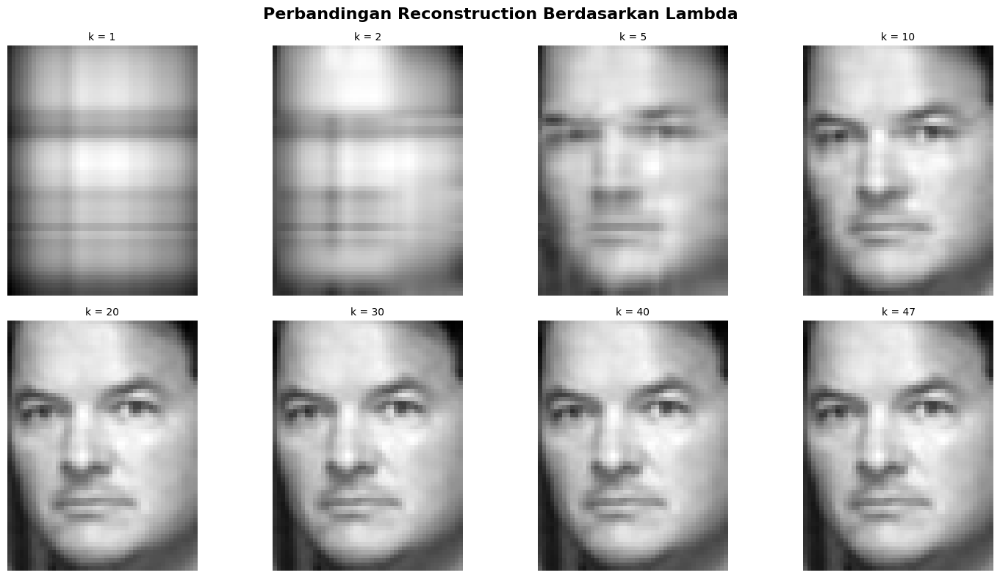
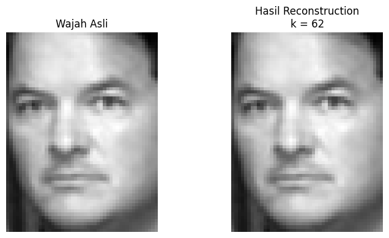
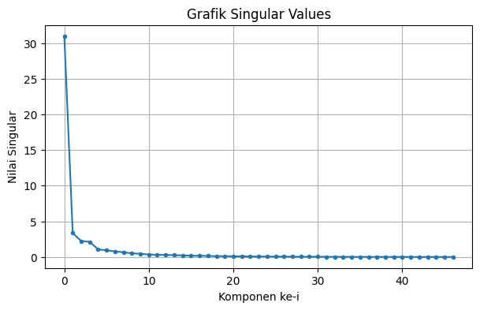

REFERENSI: https://developer.apple.com/documentation/Accelerate/compressing-an-image-using-linear-algebra
LINK COLLAB: https://colab.research.google.com/drive/16fyjIqhGplxVRzE5gAeSfgdK1DCeTBE6?usp=sharing
# =========================================================
# EIGENFACES + SVD STEP BY STEP
# =========================================================
import numpy as np
import matplotlib.pyplot as plt
from sklearn.datasets import fetch_lfw_people
# =========================================================
# LANGKAH 1 : LOAD DATASET WAJAH
# =========================================================
print("\n================ LOAD DATASET =================")
print("Mengambil dataset wajah LFW...")
lfw = fetch_lfw_people(resize=0.5)
print("Dataset berhasil dimuat!")
# dataset images
images = lfw.images
# label nama orang
labels = lfw.target
# nama class
target_names = lfw.target_names
print("\nJumlah gambar :", len(images))
print("Ukuran gambar :", images[0].shape)
# =========================================================
# LANGKAH 2 : AMBIL SATU CONTOH WAJAH
# =========================================================
print("\n================ CONTOH GAMBAR =================")
sample_index = 10
wajah_asli = images[sample_index]
h, w = wajah_asli.shape
print("Index gambar :", sample_index)
print("Dimensi gambar :", h, "x", w)
# tampilkan gambar asli
plt.figure(figsize=(4,4))
plt.imshow(wajah_asli, cmap='gray')
plt.title("Original Face")
plt.axis("off")
plt.show()
# =========================================================
# LANGKAH 3 : UBAH GAMBAR MENJADI VECTOR
# =========================================================
print("\n================ FLATTEN VECTOR =================")
sample_vector = wajah_asli.flatten()
print("Shape matrix asli :", wajah_asli.shape)
print("Shape vector :", sample_vector.shape)
print("\n5 nilai awal vector:")
print(sample_vector[:5])
# =========================================================
# LANGKAH 4 : PENJELASAN SVD
# =========================================================
print("\n================ PENJELASAN SVD =================")
print("""
A = U Σ VT
U = basis fitur vertikal
Σ = singular values / energi utama
VT = basis fitur horizontal
SVD memecah gambar menjadi pola-pola utama.
Semakin besar singular value,
semakin penting fitur tersebut.
""")
# =========================================================
# LANGKAH 5 : PROSES SVD
# =========================================================
print("\n================ SVD PROCESS =================")
U, S, VT = np.linalg.svd(
wajah_asli,
full_matrices=False
)
SIGMA = np.diag(S)
# =========================================================
# DETAIL MATRIX
# =========================================================
print("\nUkuran Matriks:")
print("U :", U.shape)
print("S :", S.shape)
print("SIGMA :", SIGMA.shape)
print("VT :", VT.shape)
print("\n5 Singular Values Pertama:")
print(S[:5])
# =========================================================
# VISUALISASI MATRIX U
# =========================================================
plt.figure(figsize=(5,5))
plt.imshow(U, cmap='gray')
plt.title("Matrix U")
plt.axis("off")
plt.show()
# =========================================================
# VISUALISASI MATRIX VT
# =========================================================
plt.figure(figsize=(5,5))
plt.imshow(VT, cmap='gray')
plt.title("Matrix VT")
plt.axis("off")
plt.show()
# =========================================================
# LANGKAH 6 : RECONSTRUCTION
# =========================================================
print("\n================ RECONSTRUCTION =================")
pilihan_k = [2, 10, 30, 47, 60, 62]
fig, axes = plt.subplots(
1,
len(pilihan_k),
figsize=(18,5)
)
fig.suptitle(
"Reconstruction Berdasarkan Nilai k",
fontsize=16,
fontweight='bold'
)
# =========================================================
# UKURAN ASLI GAMBAR
# =========================================================
original_size = h * w
# =========================================================
# LOOP RECONSTRUCTION
# =========================================================
for i, k in enumerate(pilihan_k):
# =====================================================
# POTONG MATRIX SVD
# =====================================================
U_k = U[:, :k]
S_k = np.diag(S[:k])
VT_k = VT[:k, :]
# =====================================================
# RECONSTRUCTION
# =====================================================
reconstructed = np.dot(
U_k,
np.dot(S_k, VT_k)
)
# =====================================================
# PERSENTASE KOMPONEN
# =====================================================
rank_maksimum = min(h, w)
persen_komponen = (
k / rank_maksimum
) * 100
# =====================================================
# HITUNG STORAGE SVD
# =====================================================
ukuran_U = h * k
ukuran_S = k
ukuran_VT = k * w
compressed_size = (
ukuran_U +
ukuran_S +
ukuran_VT
)
storage_ratio = (
compressed_size /
original_size
) * 100
# =====================================================
# TAMPILKAN HASIL
# =====================================================
axes[i].imshow(
reconstructed,
cmap='gray'
)
axes[i].set_title(
f"k = {k}"
f"\nKomponen : {persen_komponen:.1f}%"
f"\nStorage : {storage_ratio:.1f}%",
fontsize=10
)
axes[i].axis("off")
plt.tight_layout()
plt.show()
# =========================================================
# ANALISIS LAMBDA (EIGENVALUE)
# =========================================================
print("\n================ ANALISIS LAMBDA =================")
# =========================================================
# HITUNG LAMBDA
# lambda = singular value^2
# =========================================================
lambda_values = S**2
print("\n================ LAMBDA =================")
for i in range(62):
# jika masih dalam jumlah lambda asli
if i < len(lambda_values):
nilai_lambda = lambda_values[i]
# sisanya isi 0
else:
nilai_lambda = 0
print(
f"Lambda ke-{i+1:2d} = {nilai_lambda}"
)
# =========================================================
# CARI K YANG SUDAH MIRIP WAJAH ASLI
# =========================================================
print("\n================ PERBANDINGAN LAMBDA =================")
# beberapa k yang akan dibandingkan
k_values = [1, 2, 5, 10, 20, 30, 40, 47]
fig, axes = plt.subplots(
2,
len(k_values) // 2,
figsize=(15,8)
)
axes = axes.ravel()
for i, k in enumerate(k_values):
# =====================================================
# RECONSTRUCTION
# =====================================================
U_k = U[:, :k]
S_k = np.diag(S[:k])
VT_k = VT[:k, :]
reconstructed = np.dot(
U_k,
np.dot(S_k, VT_k)
)
# =====================================================
# HITUNG ERROR
# =====================================================
mse = np.mean(
(wajah_asli - reconstructed) ** 2
)
# =====================================================
# SHOW IMAGE
# =====================================================
axes[i].imshow(
reconstructed,
cmap='gray'
)
axes[i].set_title(
f"k = {k}",
fontsize=10
)
axes[i].axis("off")
plt.suptitle(
"Perbandingan Reconstruction Berdasarkan Lambda",
fontsize=16,
fontweight='bold'
)
plt.tight_layout()
plt.show()
# =========================================================
# ANALISIS HASIL
# =========================================================
print("""
Analisis:
1. Lambda awal biasanya sangat besar
-> menyimpan informasi wajah utama
2. Lambda akhir sangat kecil
-> hanya menyimpan detail kecil/noise
3. Semakin banyak lambda digunakan:
- wajah semakin mirip asli
- error semakin kecil
4. Biasanya pada k sekitar 30 - 40,
wajah sudah hampir identik
dengan gambar asli.
5. Saat k = 47:
- seluruh komponen utama digunakan
- reconstruction hampir sempurna
""")
# =========================================================
# PERBANDINGAN WAJAH ASLI vs HASIL k TERBESAR
# Tambahkan di bawah bagian RECONSTRUCTION
# =========================================================
print("\n================ PERBANDINGAN FINAL =================")
# ambil k terbesar
k_terbesar = max(pilihan_k)
# =====================================================
# POTONG MATRIX
# =====================================================
U_k = U[:, :k_terbesar]
S_k = np.diag(S[:k_terbesar])
VT_k = VT[:k_terbesar, :]
# =====================================================
# RECONSTRUCTION FINAL
# =====================================================
reconstructed_final = np.dot(
U_k,
np.dot(S_k, VT_k)
)
# =====================================================
# TAMPILKAN PERBANDINGAN
# =====================================================
fig, axes = plt.subplots(1, 2, figsize=(8,4))
# gambar asli
axes[0].imshow(wajah_asli, cmap='gray')
axes[0].set_title("Wajah Asli")
axes[0].axis("off")
# hasil reconstruction
axes[1].imshow(reconstructed_final, cmap='gray')
axes[1].set_title(f"Hasil Reconstruction\nk = {k_terbesar}")
axes[1].axis("off")
plt.tight_layout()
plt.show()
# =====================================================
# HITUNG ERROR
# =====================================================
error = np.mean(
(wajah_asli - reconstructed_final) ** 2
)
print("Nilai Mean Squared Error (MSE) :", error)
# =====================================================
# ANALISIS
# =====================================================
print(f"""
Analisis:
- k terbesar = {k_terbesar}
- Semakin besar k,
hasil reconstruction semakin mirip
dengan wajah asli.
- Jika k mendekati rank maksimum,
maka hampir seluruh informasi gambar
berhasil dipertahankan.
- Error reconstruction semakin kecil.
""")
# =========================================================
# LANGKAH 7 : GRAFIK SINGULAR VALUES
# =========================================================
print("\n================ SINGULAR VALUES GRAPH =================")
plt.figure(figsize=(7,4))
plt.plot(
S,
marker='o',
markersize=3,
linestyle='-'
)
plt.title(
"Grafik Singular Values"
)
plt.xlabel(
"Komponen ke-i"
)
plt.ylabel(
"Nilai Singular"
)
plt.grid(True)
plt.show()
# =========================================================
# LANGKAH 8 : PENJELASAN HASIL
# =========================================================
print("\n================ ANALISIS =================")
print("""
1. Nilai singular awal sangat besar
-> menyimpan informasi wajah utama
2. Nilai singular akhir sangat kecil
-> hanya menyimpan detail kecil/noise
3. Semakin besar nilai k:
- kualitas wajah semakin bagus
- ukuran data semakin besar
4. Semakin kecil nilai k:
- kompresi semakin tinggi
- detail wajah mulai hilang
5. Konsep ini digunakan pada:
- Eigenfaces
- Face Recognition
- Image Compression
- PCA
""")
print("\n================ SELESAI =================")
================ LOAD DATASET =================
Mengambil dataset wajah LFW...
Dataset berhasil dimuat!
Jumlah gambar : 13233
Ukuran gambar : (62, 47)
================ CONTOH GAMBAR =================
Index gambar : 10
Dimensi gambar : 62 x 47

================ FLATTEN VECTOR =================
Shape matrix asli : (62, 47)
Shape vector : (2914,)
5 nilai awal vector:
[0.19215687 0.23006536 0.303268 0.4 0.4901961 ]
================ PENJELASAN SVD =================
A = U Σ VT
U = basis fitur vertikal
Σ = singular values / energi utama
VT = basis fitur horizontal
SVD memecah gambar menjadi pola-pola utama.
Semakin besar singular value,
semakin penting fitur tersebut.
================ SVD PROCESS =================
Ukuran Matriks:
U : (62, 47)
S : (47,)
SIGMA : (47, 47)
VT : (47, 47)
5 Singular Values Pertama:
[30.986488 3.3550367 2.238037 2.129474 1.0647008]


================ RECONSTRUCTION =================

================ ANALISIS LAMBDA =================
================ LAMBDA =================
Lambda ke- 1 = 960.1624755859375
Lambda ke- 2 = 11.256271362304688
Lambda ke- 3 = 5.008810043334961
Lambda ke- 4 = 4.534659385681152
Lambda ke- 5 = 1.1335878372192383
Lambda ke- 6 = 0.8724526762962341
Lambda ke- 7 = 0.608807384967804
Lambda ke- 8 = 0.4219309389591217
Lambda ke- 9 = 0.2726961374282837
Lambda ke-10 = 0.19001208245754242
Lambda ke-11 = 0.12338901311159134
Lambda ke-12 = 0.08652569353580475
Lambda ke-13 = 0.07842952758073807
Lambda ke-14 = 0.06483956426382065
Lambda ke-15 = 0.04560881108045578
Lambda ke-16 = 0.030525246635079384
Lambda ke-17 = 0.0260513573884964
Lambda ke-18 = 0.02059139870107174
Lambda ke-19 = 0.013137317262589931
Lambda ke-20 = 0.012407355941832066
Lambda ke-21 = 0.0084999930113554
Lambda ke-22 = 0.00694891344755888
Lambda ke-23 = 0.005012337118387222
Lambda ke-24 = 0.003643645206466317
Lambda ke-25 = 0.0028828538488596678
Lambda ke-26 = 0.0022902379278093576
Lambda ke-27 = 0.002151941182091832
Lambda ke-28 = 0.0018365847645327449
Lambda ke-29 = 0.0011505302973091602
Lambda ke-30 = 0.0009785782312974334
Lambda ke-31 = 0.0008519120165146887
Lambda ke-32 = 0.0005227258079685271
Lambda ke-33 = 0.0004311555530875921
Lambda ke-34 = 0.00034185542608611286
Lambda ke-35 = 0.0002712786372285336
Lambda ke-36 = 0.00019434912246651947
Lambda ke-37 = 0.00016595731722190976
Lambda ke-38 = 0.00013041714555583894
Lambda ke-39 = 0.00010186897998210043
Lambda ke-40 = 5.8305522543378174e-05
Lambda ke-41 = 4.60496885352768e-05
Lambda ke-42 = 3.524150451994501e-05
Lambda ke-43 = 2.8440579626476392e-05
Lambda ke-44 = 2.3302327463170514e-05
Lambda ke-45 = 1.6936803149292246e-05
Lambda ke-46 = 1.0071044016513042e-05
Lambda ke-47 = 8.715841431694571e-06
Lambda ke-48 = 0
Lambda ke-49 = 0
Lambda ke-50 = 0
Lambda ke-51 = 0
Lambda ke-52 = 0
Lambda ke-53 = 0
Lambda ke-54 = 0
Lambda ke-55 = 0
Lambda ke-56 = 0
Lambda ke-57 = 0
Lambda ke-58 = 0
Lambda ke-59 = 0
Lambda ke-60 = 0
Lambda ke-61 = 0
Lambda ke-62 = 0
================ PERBANDINGAN LAMBDA =================

Analisis:
1. Lambda awal biasanya sangat besar
-> menyimpan informasi wajah utama
2. Lambda akhir sangat kecil
-> hanya menyimpan detail kecil/noise
3. Semakin banyak lambda digunakan:
- wajah semakin mirip asli
- error semakin kecil
4. Biasanya pada k sekitar 30 - 40,
wajah sudah hampir identik
dengan gambar asli.
5. Saat k = 47:
- seluruh komponen utama digunakan
- reconstruction hampir sempurna
================ PERBANDINGAN FINAL =================

Nilai Mean Squared Error (MSE) : 1.1735237e-14
Analisis:
- k terbesar = 62
- Semakin besar k,
hasil reconstruction semakin mirip
dengan wajah asli.
- Jika k mendekati rank maksimum,
maka hampir seluruh informasi gambar
berhasil dipertahankan.
- Error reconstruction semakin kecil.
================ SINGULAR VALUES GRAPH =================

================ ANALISIS =================
1. Nilai singular awal sangat besar
-> menyimpan informasi wajah utama
2. Nilai singular akhir sangat kecil
-> hanya menyimpan detail kecil/noise
3. Semakin besar nilai k:
- kualitas wajah semakin bagus
- ukuran data semakin besar
4. Semakin kecil nilai k:
- kompresi semakin tinggi
- detail wajah mulai hilang
5. Konsep ini digunakan pada:
- Eigenfaces
- Face Recognition
- Image Compression
- PCA
================ SELESAI =================
Penjelasan Eigenfaces#
Pengertian Eigenfaces#
Eigenfaces adalah metode pengenalan wajah (face recognition) yang menggunakan konsep:
Aljabar Linear
Eigenvector
Eigenvalue
PCA (Principal Component Analysis)
SVD (Singular Value Decomposition)
Tujuan utama Eigenfaces adalah:
mengenali wajah,
mengurangi dimensi data gambar,
dan mengambil fitur penting dari wajah.
Metode ini mengubah gambar wajah menjadi sekumpulan angka matematika yang merepresentasikan ciri khas wajah.
Konsep Dasar Eigenfaces#
Setiap gambar wajah sebenarnya adalah matriks piksel.
Contoh:
Gambar 50x50
=
2500 nilai piksel
Artinya:
setiap gambar memiliki ribuan fitur,
sehingga proses pengenalan wajah menjadi berat.
Eigenfaces menyelesaikan masalah ini dengan:
mengambil fitur paling penting,
membuang informasi yang kurang penting,
menyimpan wajah dalam dimensi lebih kecil.
Ide Utama Eigenfaces#
Eigenfaces mencari:
“Pola wajah utama yang paling sering muncul.”
Misalnya:
bentuk mata,
posisi hidung,
kontur wajah,
bayangan wajah.
Pola-pola tersebut disebut:
Eigenfaces
Eigenfaces bukan wajah manusia normal, tetapi pola matematis hasil kombinasi banyak wajah.
Alur Kerja Eigenfaces#
1. Load Dataset Wajah#
Program membaca banyak gambar wajah.
Contoh:
Faces/
├── person1/
├── person2/
├── person3/
Setiap gambar:
diubah grayscale,
diresize,
lalu diubah menjadi vector.
2. Mengubah Gambar Menjadi Vector#
Gambar:
50 x 50
diubah menjadi:
2500 x 1
menggunakan:
flatten()
Tujuannya agar bisa dihitung menggunakan operasi matriks.
3. Mean Face#
Semua wajah dirata-ratakan:
mean_face = rata-rata seluruh wajah
Hasilnya disebut:
Mean Face
Mean face adalah wajah rata-rata dari seluruh dataset.
4. Centering#
Setiap wajah dikurangi mean face:
A = X - mean_face
Tujuannya:
menghilangkan informasi umum,
menyisakan perbedaan unik antar wajah.
SVD pada Eigenfaces#
Setelah mendapatkan matrix A, dilakukan:
A = U Σ VT
Menggunakan:
np.linalg.svd()
Penjelasan Matriks SVD#
1. Matrix U#
Berisi:
pola fitur vertikal,
kombinasi basis data.
Ukuran:
jumlah_gambar x jumlah_gambar
2. Singular Values (Σ)#
Berisi:
tingkat kepentingan fitur,
energi informasi.
Nilai terbesar:
fitur paling penting.
Nilai kecil:
noise atau detail kecil.
3. Matrix VT#
Berisi:
fitur utama wajah,
arah variasi wajah.
Baris-baris pertama VT disebut:
Eigenfaces
Eigenfaces#
Eigenfaces adalah:
eigenfaces = VT[:K]
K = jumlah fitur utama yang dipilih.
Misalnya:
K = 20
artinya hanya 20 fitur wajah terpenting yang digunakan.
Projection#
Wajah diproyeksikan ke ruang eigenfaces:
projected_face = A × eigenfacesᵀ
Hasilnya:
wajah berubah menjadi vector fitur,
ukurannya jauh lebih kecil.
Recognition / Matching#
Untuk mengenali wajah:
wajah test diproyeksikan,
dibandingkan dengan seluruh wajah training,
dihitung jaraknya.
Biasanya menggunakan:
np.linalg.norm()
Wajah dengan jarak terkecil dianggap paling mirip.
Reconstruction#
Eigenfaces juga bisa membangun ulang wajah:
reconstructed =
mean_face + projection × eigenfaces
Jika nilai K besar:
wajah semakin jelas.
Jika K kecil:
wajah blur tetapi ukuran data kecil.
Hubungan Eigenfaces dan PCA#
Eigenfaces sebenarnya adalah implementasi PCA untuk gambar wajah.
PCA digunakan untuk:
mencari dimensi terpenting,
mengurangi data,
mempertahankan informasi utama.
Kelebihan Eigenfaces#
1. Cepat#
Karena dimensi data diperkecil.
2. Hemat Memori#
Tidak perlu menyimpan semua piksel penuh.
3. Mudah Diimplementasikan#
Bisa menggunakan:
NumPy
SVD
PCA
Kekurangan Eigenfaces#
1. Sensitif Cahaya#
Perbedaan pencahayaan dapat mempengaruhi hasil.
2. Sensitif Pose#
Jika posisi kepala berubah:
akurasi turun.
3. Kurang Bagus untuk Dataset Besar#
Metode modern seperti:
CNN,
Deep Learning,
FaceNet, lebih akurat.
Penerapan Eigenfaces#
Eigenfaces digunakan pada:
Face Recognition
Sistem Absensi
Keamanan
Image Compression
Computer Vision
PCA Learning
Pattern Recognition
Kesimpulan#
Eigenfaces bekerja dengan cara:
mengubah wajah menjadi matriks,
mencari fitur utama menggunakan SVD/PCA,
membentuk eigenfaces,
memproyeksikan wajah ke ruang fitur,
membandingkan kemiripan wajah menggunakan jarak.
Konsep utamanya adalah:
Mengubah gambar wajah besar
menjadi representasi fitur kecil
tanpa kehilangan informasi penting.